Lovina
ou le repos des guerriers
Lovina
Le retour d'iJen nous a séché. On a marché toute la nuit il faut dire. Et merci les "blue fire", on a pas été gâtés quand même. Je faisais mieux avec le gaz de ville à Toulouse. Mais peut importe, c'est le voyage qui compte. On est donc crevés, on rentre un poil énervés par notre guide fantôme, il nous faut repartir sur de bonnes bases. Du coup direction le ferry pour Bali, accompagnés de nos deux comparses allemandes rencontrées quelques jours plus tôt. On se sent plus forts à 4 qu'à 2. La traversée se fait bien, suivie du bus, on somnole beaucoup, on essaie de tenir jusqu'au repos bien mérité. On a choisi de s'arrêter un peu là-bas, pour se reposer et parce qu'on a besoin de ralentir le rythme. Une dernière galère avec une carte pas à jour (et double combo: on a à la fois une route sur la carte qui n'existe pas en vrai, et une route qui est bien là que la carte ne nous donne pas), on arrive avec toutes nos jauges (sommeil, faim, soif, chaleur) assez bas, mais à bon port. Et quel port ! Maïlys nous a choisit un vrai havre de paix, où le repos sera salvateur. On est très bien acceuillis, belle piscine, bon p'tit déj (pancake banane pour Maïlys, toujours), et Lovina s'offre à nous (après une nuit de sommeil quand même, enfin, une nuit de 15h pour la miss !).
Lovina est une petite station balnéaire, ça sent le tourisme mais ça reste assez authentique si on s'écarte des commerces de la plage. On vagabonde pas mal, en vélo d'abord, pour voir les environs. Maïlys aura même le courage (pour ne pas dire l'indélicatesse) de s'arrêter chez des "bidan" (les sage-femmes d'ici) pour aller parler boulot. Je vous rassure, même si j'ai vu quelques techniciens sur les lignes électriques, j'ai tracé ma route pour ma part. On se paiera aussi le luxe d'une petite virée en scooter pour aller voir quelques cascades dans les hauteurs et le lac Bratan avec son temple au goût de parc d'attraction (et où on se caille sapristi !). Et un passage aussi par Singaraja, mais l'humeur n'était pas à l'appréciation de cette "grosse" ville, malgré quelques petites ruelles sympathiques. Mais le clou de notre passage à Lovina sera le cours de cuisine qu'on a pris au Warung Jegeg tenu par Wayan avec qui on a bien sympathisé. On a concocté avec son aide quelques succulents plats (mes papilles se souviennent encore de ce thon au lemongrass). On y retournera d'ailleurs avec nos amies allemandes pour une dernière soirée.
Bref Lovina aura véritablement été le lieu de repos qu'on attendait, dont on avait besoin même. Pour ça, Bali, je te remercie.
Mundunk
On le sait déjà, on est plus montagne que plage. Du coup un arrêt par Mundunk, petit village de montagne au milieu des rizières d'ou partent des randos sympas était une évidence.
Et que dire si ce n'est qu'on a apprécié cette halte. Mais qu'est-ce qu'on a marché ! Bon aussi parce qu'on s'est un peu perdu. Mais le tour des cascades était très joli, tout juste éprouvant, avec quelques belles découvertes et une petite baignade dans de l'eau claire (et un peu froide) à la clé. Le tour des rizières aussi a eu ce lot de beaux paysages, on apprécie beaucoup cette nature organisée par l'homme. Et je sais pas si c'est qu'on a eu de la chance, ou Maïlys qui a bien fait ses devoirs, mais on a su dénicher de très bons warungs pour reprendre des forces le soir. On commence à en avoir marre de la viande tous les jours, et l'offre végétarienne est pléthorique. Et pour terminer proprement, ici, les desserts sont essentiellements à base de pancakes ou de crêpes, ce qui fait le bonheur de ma femme.
Mais le temps du batifolage dans la verdure se termine vite, il nous faut revenir à la réalité. On doit anticiper le prochain voyage, les billets d'avion pour le Vietnam et le visa. Et notre extension de visa pour l'indonésie. On savait que c'était possible, pas de soucis. Mais on savait pas à quel prix. Et la note est un peu salée : 3 visites aux services d'immigration à prévoir. Ca chamboule tout notre plan pour la suite. On doit donc s'occuper d'aller à Denpasar, et rayonner de là pour revenir à chacun de nos rendez-vous. Mais c'est ça aussi le voyage, des imprévus. Des loupés et des ratés. Et l'avantage de notre organisation au jour le jour (ou presque), c'est bien de s'adapter rapidement, tels des scarabés (qu'on se le dise, les scarabés sont les rois de l'adaptation, je l'ai vu dans un reportage sur Arte). Donc on s'adapte, on change nos plans et nous voilà en partance pour Denpasar !
 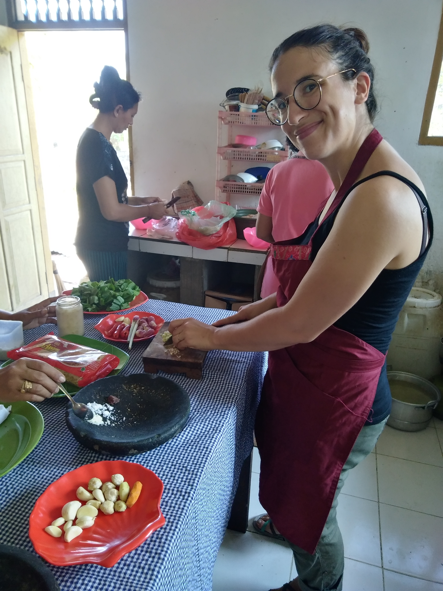
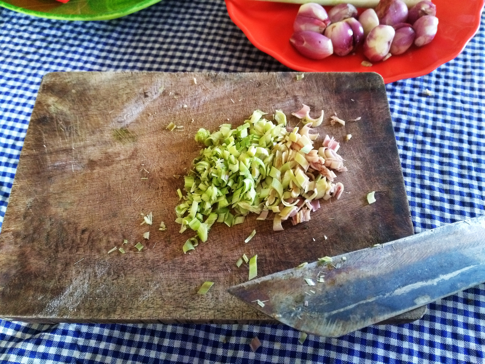
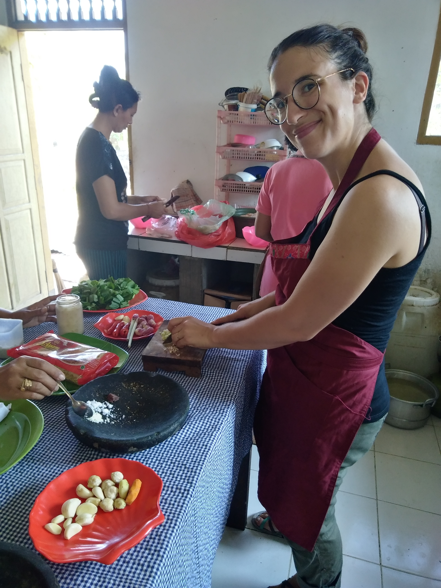
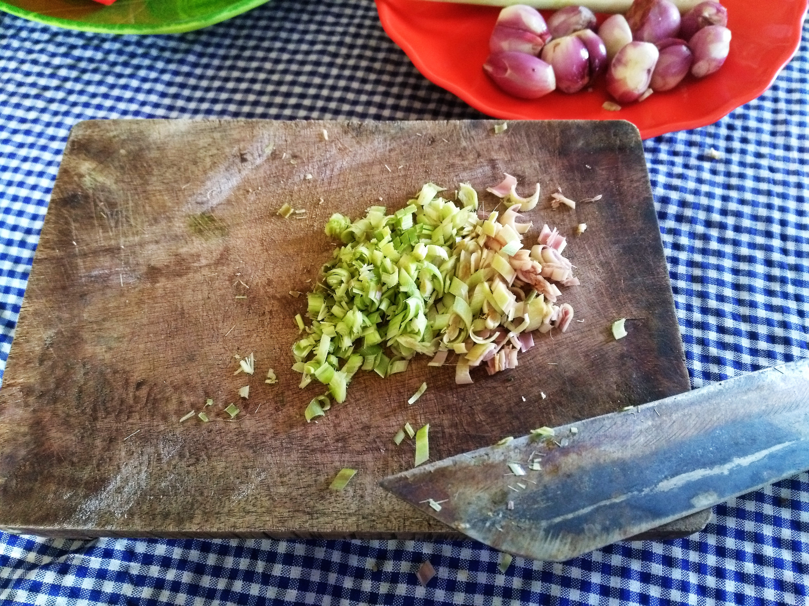
 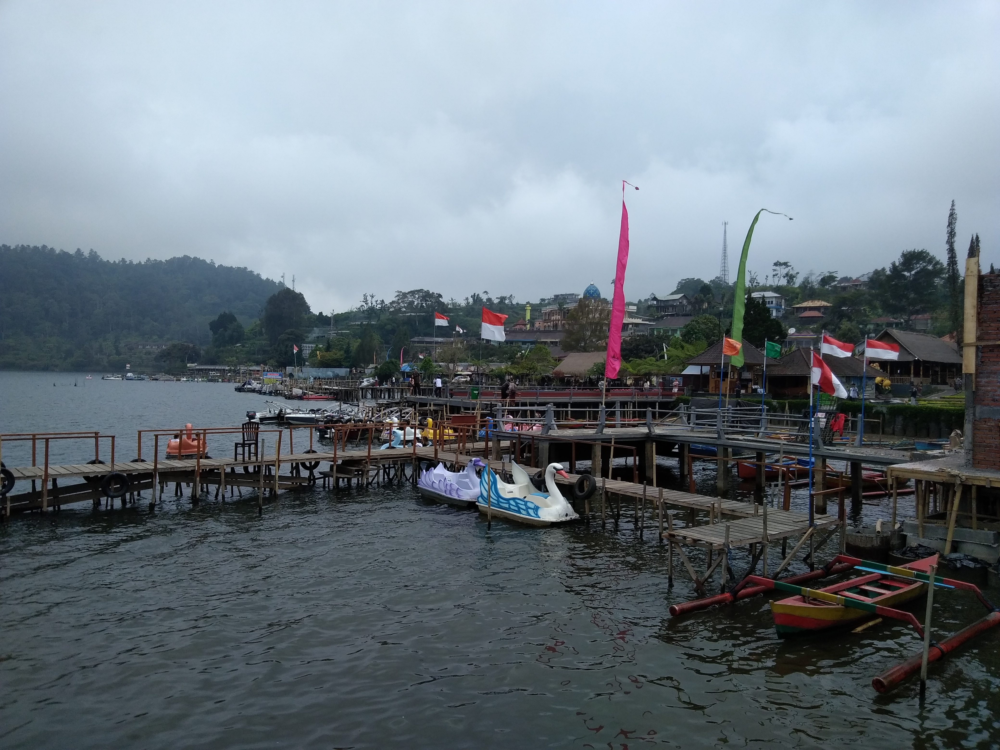
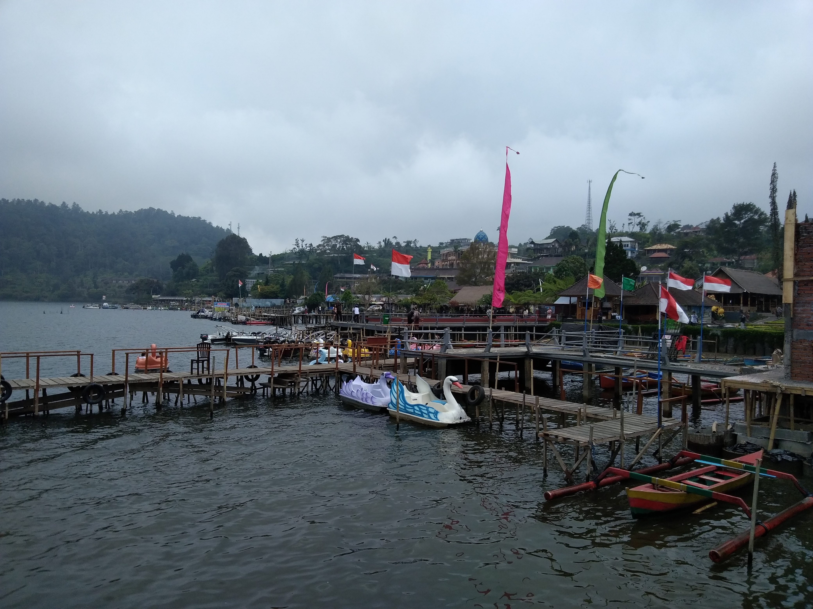
 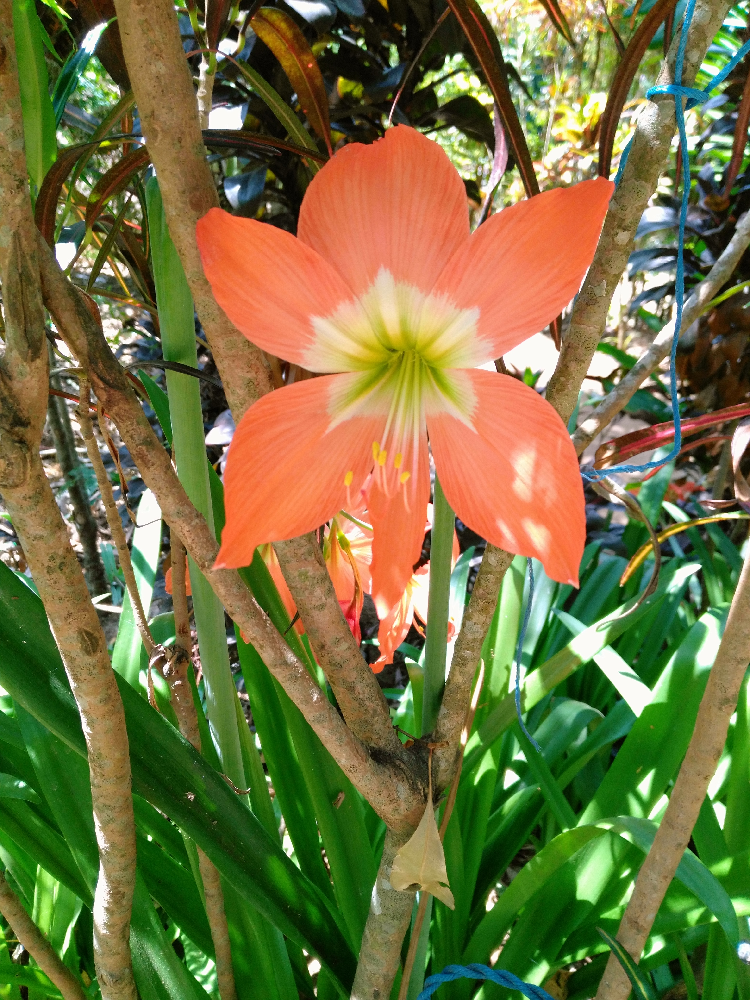
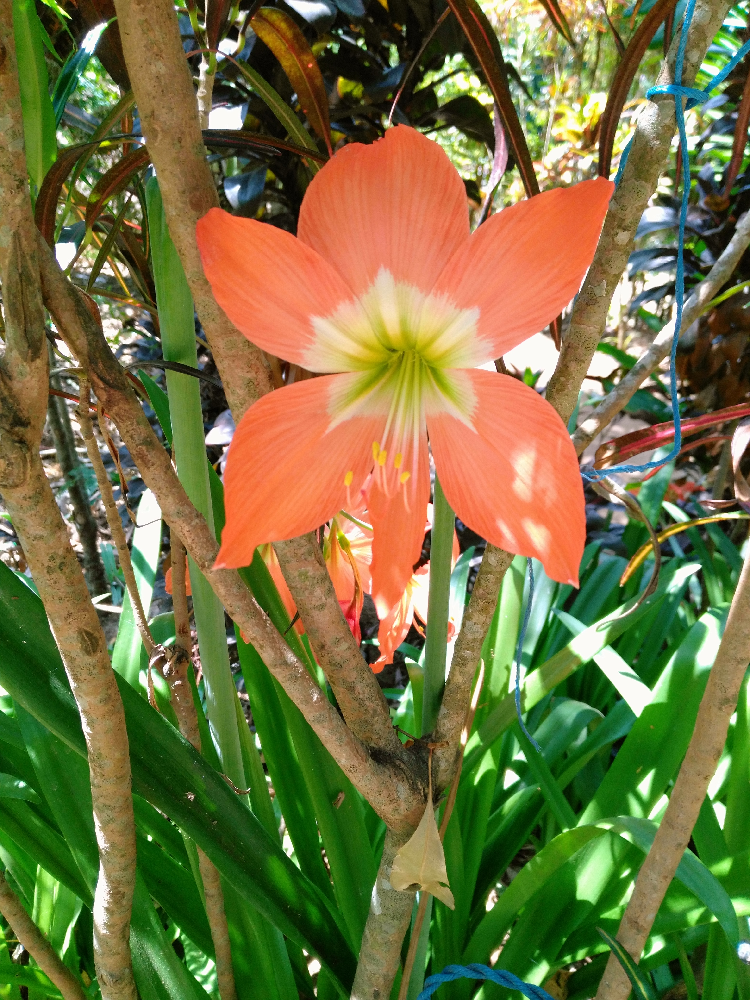


 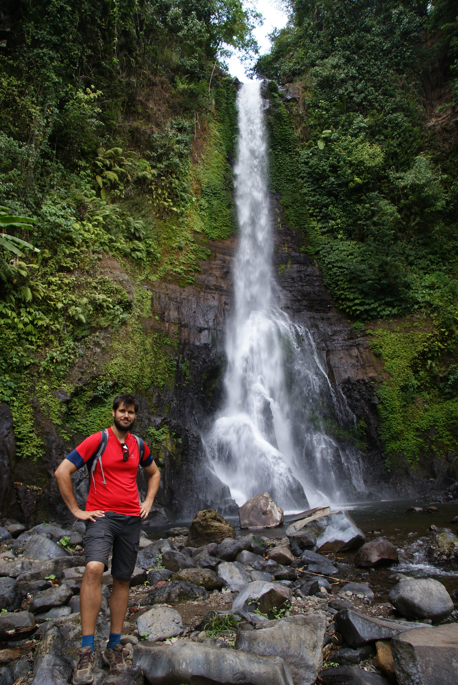
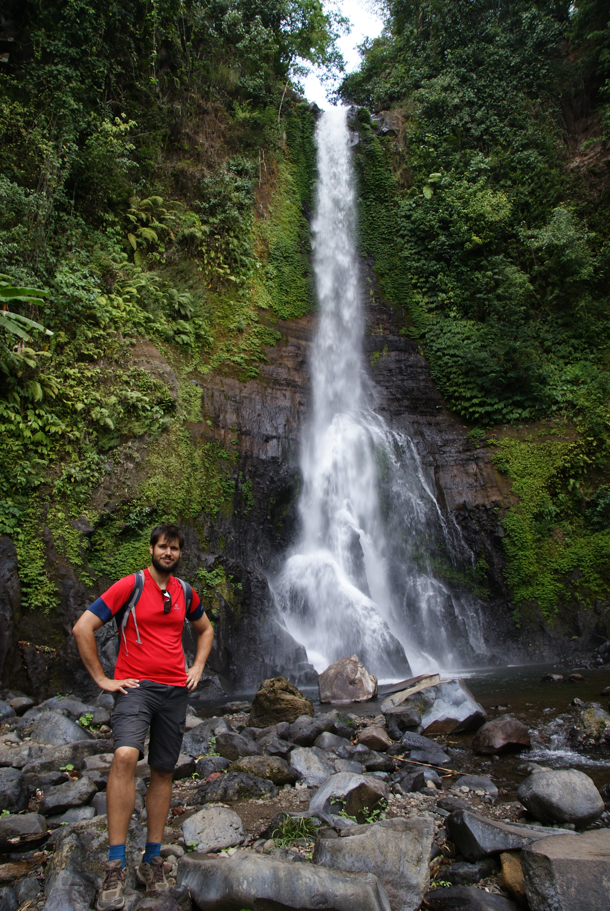
 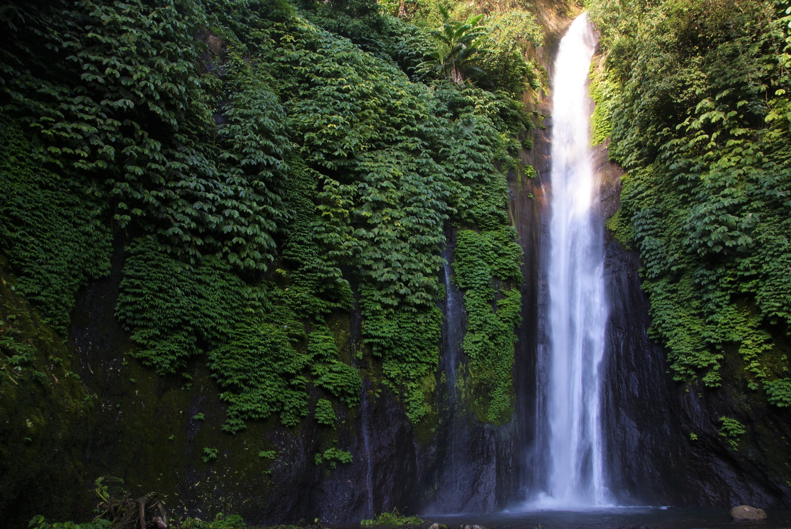
<\div>
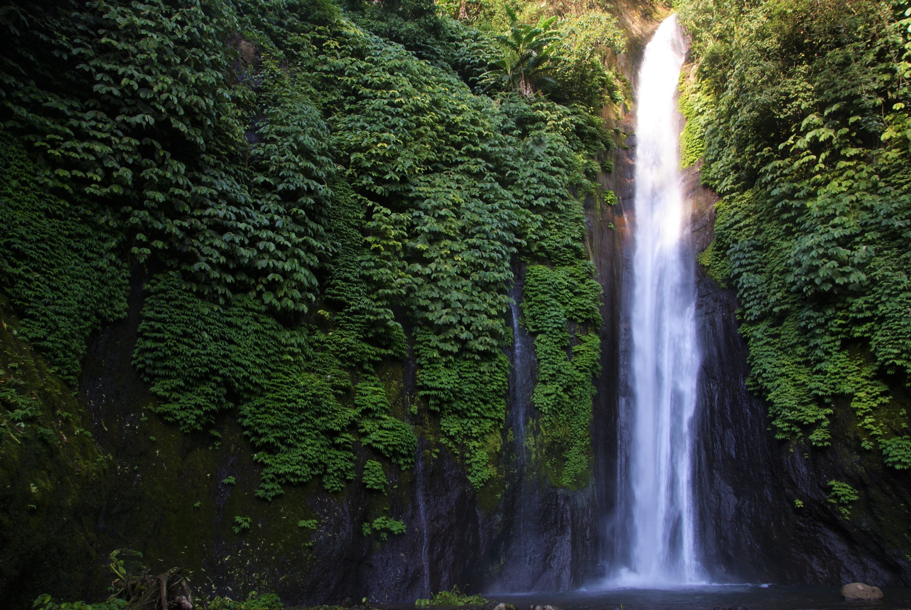
<\div>